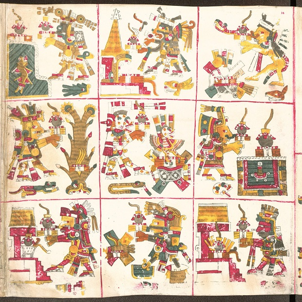

Sólo 9 pasos antes de ser eterno
Están en el Mictlán, el Inframundo.
Todo está muy oscuro pero alcanzas a vislumbrar una silueta.
Una imponente figura se posa enfrente de ti.
Puedes hacerle preguntas a Mictlantecuhtli como:
- ¿Por qué se celebra el día de muertos?
- ¿Que pasa en el Mictlán?
- ¿Eres un muerto?
- ¿Quién eres?
- ¿En dónde estoy?
- ¿Qué es el Micltán?
- ¿Qué significa la muerte para los mexicas?
- ¿Cuándo debo celebrar el día de muertos?
- ¿Qué debes hacer para llegar al Mictlán?
- ¿Qué es la catrina?
- ¿Qué significa Mictlantecuhtli?
- ¿Quién es Mictlancihuatl?
- ¿Cuáles son los niveles del Mictlán? y, preguntar por cada uno.
- Sobre los otros lugares de descanso. El Omeyacan, el Tlalocan o el Chichihuacuauhco.
No dudes en preguntarle a Mictlantecuhtli
Este ES su terreno
